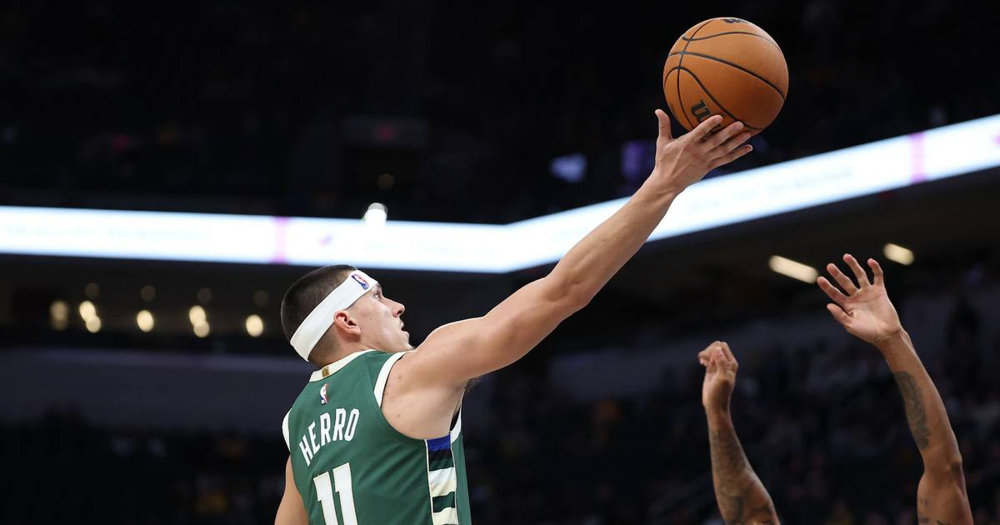

Herro's 32 ends Bucks' 13-game losing streak
Tyler Herro scored 32 as the Bucks beat the Raptors 116-111 in Toronto, snapping a 13-game skid — the second-longest in franchise history — for their first win since October 26.

Disclosure: this post contains affiliate links. I earn a commission on qualifying purchases.
Thirteen games later, the Milwaukee Bucks finally won one. Tyler Herro scored 32 points and Myles Turner added a season-high 27 as Milwaukee beat the Toronto Raptors 116-111 on Monday night at Scotiabank Arena, ending a skid that had stretched nearly a month and stood as the second-longest in franchise history.
The win moved Milwaukee to 2-16. It was the Bucks' first victory since beating Indiana on October 26.
How the night unfolded
It did not start like a breakout. Herro, two nights removed from a career-high 50 in a loss at Philadelphia, managed only three points in the first half as Toronto's physical defense keyed on him. Milwaukee stayed in it anyway: Turner scored 18 before the break and Kyle Kuzma added 11, and the Bucks trailed by just four at halftime despite getting almost nothing from their hottest scorer.
The third quarter is where the game turned. Herro made six of seven shots in the period for 15 points, finding his rhythm after a quiet opening two quarters and giving Milwaukee the lift it had been waiting a month for.
He finished the job in the fourth, scoring 14 more as the Bucks pulled away late and built a 10-point lead with a minute to play. With 1:51 left, Toronto's Jamal Shead missed two free throws; Herro answered at the other end to push the lead to 113-104 with 1:33 remaining, then splashed a three to make it 116-106 with 1:03 left. Toronto never got closer than the final five-point margin.
Tyler Herro: 32; 6; 8; 10-16 FG, 4-5 3PT, 8-8 FT
Myles Turner: 27; 11; —; 5 threes made
Turner fouled out after his season-best scoring night, which included five three-pointers. His first-half scoring was the reason Milwaukee was still in the game when Herro heated up.
Where the skid sits in history
Only one losing streak in Bucks history runs longer than this one: 15 straight games in March 1996, by a team that finished 25-57. The 13-game run was tied for the second-longest in franchise history, last matched in Giannis Antetokounmpo's rookie season of 2013-14 — the year that team went 15-67, the worst record in franchise history.
The drought had also produced the worst start in the franchise's 59-year history. Milwaukee dropped to 1-14 during the run, and at 2-16 it still owns the league's worst mark by winning percentage. The win in Toronto doesn't fix any of that. It just stops the bleeding — and for a team that had found a new way to lose nearly every night for a month, that counts for plenty.
Herro's week
The context makes the two nights even stranger. On Saturday in Philadelphia, Herro dropped a career-high 50 — and the Bucks lost anyway. On Monday, he scored three points in a half and still finished with a game-high 32 in a win. The scoring hasn't been the problem. The rest of the roster catching up has been, and on this night Turner and Kuzma did exactly that in the first half, holding the line until their star found his shot.
Watch
Source: BUCKS at RAPTORS | FULL GAME HIGHLIGHTS | November 23, 2026 (NBA) — full highlights of Milwaukee's 116-111 win, including Herro's third-quarter burst and the closing stretch that snapped the skid.
Sources
• Herro scores 32, Bucks beat Raptors to snap 13-game losing streak (theScore / AP)
• Tyler Herro scores 32 as Bucks snap 13-game losing streak (Reuters / Field Level Media)
• Bucks snap 13-game losing streak with 116-111 victory over Raptors (Milwaukee Journal Sentinel)
Gear up: Bucks gear (Herro No. 11 jerseys, apparel): via Fanatics